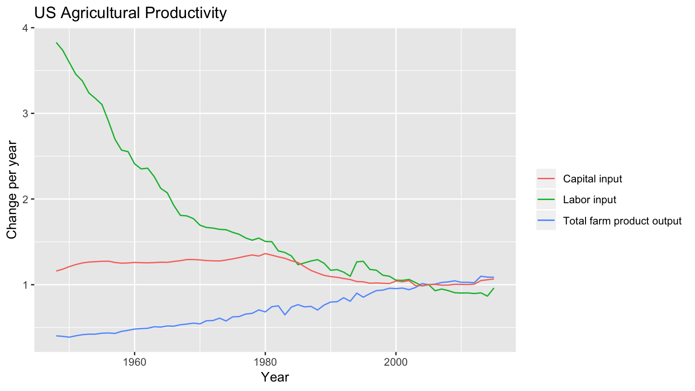

Introduction
Jessica Flohr, Lily Turner, and Sunshine Schneider
Last updated on 2018-12-19

Food Insecurity in the Continental US
It is no secret that the United States suffers from a food problem. While many turn to the issue of obesity and American addiction to fast food, the real issue that one in eight Americans face is that of food insecurity. Defined by the United States Department of Agriculture (USDA) as, “a lack of consistent access to enough food for an active, healthy life,”1 food insecurity is not an isolated issue. Food insecurity intersects with issues of affordable housing, social isolation, education level, and employment as a determinant of health. Not only is consistent access to food important, but access to quality, fresh food (not just fast food) is important when considering the health of average Americans. Food deserts, or places lacking adequate supply of fresh fruit, vegetables, and other healthy whole foods, contribute to food insecurity, and 23.5 million people in the United States2 live in areas defined as food deserts.
Agricultural productivity has actually gone up in the United States as labor and capital input have decreased (as seen here in data from the USDA3), likely in part due to technological improvements; however, this food is not evenly distributed. Many people are in places with little access to fresh produce, while others are simply unable to afford it. Thus, despite the increase in agricultural productivity, food insecurity in the United States remains an issue.

Although both capital input and labor input have slowly decreased throughout recent years, as seen above, the total farm output continues to steadily increase, a direct result of the mechanization of American agricultural. This has had adverse effects on the health of the people, who suffer from the low quality of produce and the misleadingly cheap prices of foods that in actuality are not healthy.
This project seeks to identify the intersections between food insecurity and accessibility, to investigate what seems to be working and where access to fresh food and farm produce can be improved.
“Food Security in the US: Key Statistics and Graphs.” USDA ERS, USDA, 5 September 2018, https://www.ers.usda.gov/topics/food-nutrition-assistance/food-security-in-the-us/key-statistics-graphics.aspx.↩
“Food Deserts in America.” Tulane University School of Social Work, Last updated 2018, https://socialwork.tulane.edu/blog/food-deserts-in-america.↩
“Agricultural Productivity in the US.” USDA, 4 April 2018, https://www.ers.usda.gov/data-products/agricultural-productivity-in-the-us.aspx↩